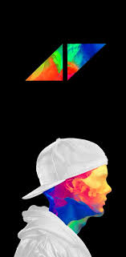

AVICCI
8 de septiembre de 1989, Estocolmo, Suecia
- True
- Stories
- live a you will remember
A los 16 años comenzó a publicar sus remixes en foros de música electrónica, lo que lo llevó a su primer contrato discográfico.4 Alcanzó la fama en 2011 con su sencillo «Levels». Su álbum de estudio debut, True (2013), combinó música electrónica con elementos de múltiples géneros y recibió críticas generalmente positivas. Alcanzó su punto máximo en la lista de los diez primeros en más de quince países y encabezó las listas internacionales dance.567 El primer sencillo, «Wake Me Up», encabezó la mayoría de los mercados de música en Europa y alcanzó el número 4 en Estados Unidos.
Calificacion: 9.5
